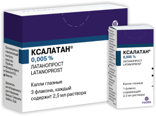
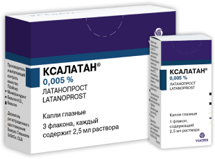

Глаукома относится к заболеваниям, требующим длительной терапии. Чтобы обеспечить высокий уровень приверженности лечению и предотвратить потерю зрения, оптимальное лекарство должно быть не только эффективным, но и достаточно безопасным, а также простым в применении 1.
Революция в фармакотерапии глаукомы началась с появления аналога простагландинов латанопроста
Глаукома — актуальная проблема современной офтальмологии
и одна из наиболее распространенных причин необратимой
Табл. 1. Распространенность и заболеваемость глаукомой
на территории РФ 4.
Большую часть случаев глаукомы (по некоторым данным, 80%) составляют открытоугольные формы 5.
Глаукома является одной из ведущих причин потери зрения 1,2. Но достаточно эффективные и безопасные препараты, позволившие сделать медикаментозную терапию основой лечения заболевания, появились относительно недавно (только в 1990-х годах) 3.
Прорывом стало появление в 1996 году препарата из группы аналогов простагландинов латанопроста (оригинальный препарат —
После появления на рынке в 1996 году этого препарата в течение более чем 20 лет (до 2018 года) не было зарегистрировано ни одного нового класса лекарственных средств для лечения глаукомы 9.
В настоящее время латанопрост имеет широкую доказательную базу исследований, которые демонстрируют значительное гипотензивное действие препарата,
благоприятный профиль переносимости, а также высокие показатели приверженности терапии
 

Лечение глаукомы:
исторический экскурс
Длительное время глаукома считалась
преимущественно хирургической патологией.
Это не означает, что ученые не пытались создать лекарственные препараты — такая работа велась еще с позапрошлого столетия.
Поиск эффективных и безопасных лекарств для борьбы с глаукомой превратился в длинный путь проб и ошибок (рис. 1).
Добиться успеха и совершить революцию удалось только спустя столетие с начала этого пути 3,6.
Точкой отсчета стал 1875 год, когда для борьбы с глаукомой начали применять пилокарпин. Далее были попытки использования кристаллических алкалоидов
(в том числе стрихнина в 1890-х годах), осмотических средств
(1900 г. — гипертонический раствор, 1904 г. — глюкоза,
мочевина, маннит, глицерин). В 1940 г. в качестве средств для борьбы с глаукомой на рынок вышли
Они были эффективны только при внутривенном введении, вызывали ортостатическую гипотензию и другие выраженные нежелательные эффекты 10.
Рис. 1. Таймлайн: средства, предложенные
для лечения глаукомы в разные годы 10.
В 1954 г. были предложены ингибиторы карбоангидразы. Изначально препараты этой группы использовались только для приема внутрь. А глазные капли появились только в 1994 г. В 1955 г. появились адреномиметики. Препараты из обеих групп вызывали как местные, так и системные побочные эффекты 10.
Разработка новых лекарств активно продолжалась, и в 80–90-е гг. было предложено несколько классов лекарственных препаратов.
Но существенного успеха удалось достичь только аналогам простагландинов. На самом деле их способность снижать
внутриглазное давление (ВГД) была обнаружена в экспериментах на животных еще в 1982 г. После этого была проведена серия необходимых
дополнительных экспериментов, клинические испытания с участием пациентов, после чего FDA одобрило латанопрост для клинического применения
Рис. 2. Хронология внедрения
местных препаратов для снижения ВГД 32.
В настоящее время Ксалатан® продолжает удерживать лидирующие позиции на рынке среди препаратов для лечения
глаукомы по числу коммерческих назначений офтальмологами, в том числе среди монопрепаратов
Из всех аналогов простагландинов только латанопрост включен в регулярно пересматривающийся «Список важнейших лекарственных средств ВОЗ». Вместе с ним в данный список попали лишь два антиглаукомных препарата в форме глазных капель: пилокарпин и тимолол 13.
Место аналогов простагландинов
в лечении глаукомы
Главная проблема глаукомы — это угроза потери зрения. Соответственно, основной целью лечения является сохранение зрительных функций у пациента и связанного с ними уровня качества жизни — это отражено в Клинических рекомендациях Минздрава РФ (2020 г.) 14. Аналоги простагландинов и, в частности, латанопрост стали препаратами первой линии в лечении глаукомы 1. Они способствуют снижению ВГД, помогают контролировать его в течение суток, обладают хорошим профилем безопасности, обеспечивают высокие показатели приверженности лечению 3.
Выраженное
снижение ВГД
Еще самые ранние исследования латанопроста показали его значимое гипотензивное действие. Спустя 3–4 часа после инстилляции можно отметить
снижение ВГД, а максимальный эффект достигается через
Рис. 3. Демонстрация гипотензивного эффекта на фоне терапии
препаратом Ксалатан® у пациентов как с высоким,
так и с умеренно
повышенным уровнем ВГД.
Исследование Andreas Bayer et al (2004 г.),
длившееся 2 года и включавшее 1 571 пациента
показало,
что при переходе с других
антиглаукомных препаратов на Ксалатан®
происходит дополнительное снижение ВГД 16:
- C бета-адреноблокатора тимолола — на 3,7 мм рт. ст.;
- C агониста альфа-адренорецепторов бримонидина — на 3,2 мм рт. ст.;
- C ингибитора карбоангидразы дорзоламида — на 2,6 мм рт. ст.;
- C м-холиномиметика пилокарпина — на 3,8 мм рт. ст.
Еще одно преимущество препарата в том, что его можно применять в течение длительного времени. Так, Albert Alm с соавторами (2004 г.) продемонстрировали в своем исследовании, что ВГД у пациентов с глаукомой по завершении 5-летней терапии латанопростом снизилось с 23,8 мм рт. ст. до 17,8 мм рт. ст. Уже в первый месяц терапии произошло снижение ВГД на 6,6 мм рт. ст. от исходного 17. Рябцева А.А. и соавт. (2008 г.) выявили снижение ВГД на 25–30% к концу первого месяца лечения препаратом Ксалатан® у пациентов с сочетанием глаукомы и миопии 18.
Высокую эффективность аналогов простагландинов и латанопроста, в частности, показал систематический обзор Li T. с соавторами (2016 г.). В анализ было включено 114 рандомизированных контролируемых исследований с участием 20 257 пациентов (рис. 4) 19. Согласно заключению обзора, латанопрост вошел в тройку наиболее эффективных гипотензивных средств 19.
Рис. 4. Снижение ВГД при использовании различных антиглаукомных
препаратов, согласно анализу Li T. с соавторами (2016 г.) 19.
Контроль
суточного ВГД
На прогноз при глаукоме влияют не только абсолютные показатели ВГД, но (даже в большей степени) и его изменение
в течение суток, особенно у пациентов из старших возрастных групп 20.
Согласно некоторым данным, среднесуточные колебания
более 1 мм рт. ст. и увеличение возраста на каждые 5 лет повышают риск потери зрения на 30% 20.
Исследование Orzalesi N. с соавторами (2000 г.) оценивало снижение ВГД в течение суток на фоне использования тимолола 0,5%, латанопроста 0,005% и дорзоламида у пациентов с ПОУГ или офтальмогипертензией (ОГ). Результаты исследования продемонстрировали, что латанопрост приводил к равномерному циркадному снижению ВГД.
При этом, согласно выводам исследования, тимолол был менее эффективен в ночные часы, а дорзоламид менее эффективен в утренние, дневные и вечерние часы (в 9 часов утра, в полдень, а также в 3 и 6 часов вечера) (рис. 5) 21.
Рис. 5. Способность латанопроста, тимолола и дорзоламида
контролировать суточное ВГД, согласно результатам исследования
Orzalesi N. с соавторами (2000 г.) 21.
Замедление потери
поля зрения
К максимальному снижению ВГД нужно стремиться у всех пациентов с глаукомой, но конечная цель — сохранить зрение 14. Глаукомная оптиконейропатия характеризуется прогрессирующей дегенерацией зрительного нерва и ганглиозных клеток сетчатки 22. И в этом отношении очень кстати оказываются нейропротективные эффекты аналогов простагландинов.
Как показало исследование Zheng J. с соавторами (2011 г.), латанопрост в терапевтических концентрациях существенно повышает жизнеспособность ретинальных ганглиозных клеток по сравнению с группой контроля 23. Препарат вызывает стимуляцию роста нейритов, причем эффект сходен с действием на рост нейритов цилиарного нейротрофического фактора (CNTF) 23.
В то же время латанопрост продемонстрировал способность замедлить потерю поля зрения у пациентов с глаукомой. Это было показано в клиническом исследовании UKGTS (Garway-Heath DF с соавторами, 2015 г., рис. 6) 24.
Оно стало первым рандомизированным плацебо-контролируемым исследованием, которое показало сохранение зрения при использовании препарата для снижения
ВДГ у пациентов с открытоугольной глаукомой. Дизайн исследования позволил оценить значительные различия в зрении за относительно
короткий период наблюдения 24. Исследование вошло в список ключевых, знаменательных исследований в области изучения глаукомы по мнению
Европейского глаукомного общества и Американской Академии
Рис. 6. Влияние препарата Ксалатан® и плацебо на прогрессию потери
поля зрения.
Результаты исследования Garway-Heath DF et al (2015 г.) 24.
Благоприятный
профиль переносимости
Лечение глаукомы — длительный процесс, поэтому оптимальный препарат должен обладать хорошим профилем безопасности и благоприятной переносимостью. В этом отношении аналоги простагландинов также показали себя с хорошей стороны.
Так, в исследовании Rahman M.Q. с соавторами (2009 г.) частота отмены из-за развития нежелательных явлений оказалась
наиболее низкой у препаратов на основе латанопроста
Хорошую переносимость латанопроста можно проследить по частоте развития гиперемии глаз на фоне лечения. При использовании данного препарата она развивается реже, по сравнению с другими аналогами простагландина (рис. 7) 28.
Рис. 7. Частота развития гиперемии глаз при лечении глаукомы
различными аналогами простагландинов 28.
Высокий уровень
приверженности лечению
Простой режим применения латанопроста, 1 раз в сутки в вечернее время, способствует соблюдению режима лечения 8. Благодаря этому пациенты реже забывают о применении препарата. Ретроспективное когортное популяционное исследование, проведенное в 2002 году, показало, что Ксалатан® обеспечивает более высокую приверженность лечению по сравнению с другими антиглаукомными препаратами (рис. 8) 27.
Рис. 8. Приверженность лечению глаукомы аналогом простагландинов
Ксалатан® и другими препаратами.
По мнению Ю. С. Астахова, широкое использование латанопроста, а затем и остальных аналогов простагландинов вывело медикаментозную терапию глаукомы и офтальмогипертензии на качественно иной уровень, чем прежде 3.
А по мнению профессора Н. И. Курышевой, латанопрост (Ксалатан®) «обладает наиболее сбалансированным соотношением по эффективности и безопасности по сравнению с другими аналогами простагландинов, его применение повышает качество жизни больных глаукомой, обеспечивает суточный контроль ВГД, высокую приверженность больных лечению и сохранение ими зрительных функций в отдаленном периоде.
Таким образом, латанопрост может быть рекомендован как препарат выбора в лечении больных глаукомой» 15.
Список литературы
- Егоров, Е. А. Национальное руководство по глаукоме / под ред. Егорова Е. А. , Еричева В. П. - Москва : ГЭОТАР-Медиа, 2019. - 384 с. - ISBN 978-5-9704-5492-3.
- Jamie Dietze; Kyle Blair; Shane J. Havens. Glaucoma. Treasure Island (FL): StatPearls Publishing; 2023 Jan.
- Ю. С. Астахов, П. А. Нечипоренко Аналоги простагландинов: прошлое, настоящее и будущее // Офтальмологические ведомости. 2017. №1.
- Мовсисян А.Б., Куроедов А.В., Архаров М.А., Прохоренко В.В., Чепурнов И.А. Эпидемиологический анализ заболеваемости и распространенности первичной открытоугольной глаукомы в Российской Федерации.
- Navid Mahabadi; Lisa A. Foris; Koushik Tripathy. Open Angle Glaucoma. Treasure Island (FL): StatPearls Publishing; 2023 Jan.
- Stjernschantz, Johan Wilhelm and Bahram Resul. Phenyl substituted prostaglandin analogs for glaucoma treatment. Drugs of The Future 17 (1992): 691.
- Внутренний документ ООО «Виатрис».
- Общая характеристика лекарственного препарата Ксалатан®-ЛП-№(001635)-(РГ-RU).
- New wave of drugs poised to shake up glaucoma treatment.
- Nancy Groves. Tracing history of glaucoma drugs. Ophthalmology news. May 10, 2019.
- Prindex, Q4-2022. Противоглаукомные препараты и миотики, коммерческое назначение.
- IQVIA, 2022.
- 21st WHO Model List of Essential Medicines (2019).
- Глаукома первичная открытоугольная. Клинические рекомендации, 2020.
- Н.И. Курышева. Долгосрочное применение латанопроста в лечении глаукомы. Вестник офтальмологии. №2. Том 136. 2020 г.
- Bayer A, Weiler W, Oeverhaus U, Skrotzki FE, Stewart WC; Xplore Observation Group. Two year follow up of latanoprost 0.005% monotherapy after changing from previous glaucoma therapies. J Ocul Pharmacol Ther. 2004 Dec;20(6):470-8.
- Alm A, Schoenfelder J, McDermott J. A 5 year, multicenter, open label, safety study of adjunctive latanoprost therapy for glaucoma. Arch Ophthalmol. 2004 Jul;122(7):957-65.
- Рябцева А.А., Хомякова Е.Н., Сергушев С.Г. Мониторинг гипотензивного эффекта препарата Ксалатан® у больных первичной открытоугольной глаукомой в сочетании с миопией.
- Li T, Lindsley K, Rouse B, Hong H, Shi Q, Friedman DS, Wormald R, Dickersin K. Comparative Effectiveness of First Line Medications for Primary Open Angle Glaucoma: A Systematic Review and Network Meta analysis. Ophthalmology. 2016 Jan;123(1):129-40.
- Nouri Mahdavi K, Hoffman D, Coleman AL, Liu G, Li G, Gaasterland D, Caprioli J; Advanced Glaucoma Intervention Study. Predictive factors for glaucomatous visual field progression in the Advanced Glaucoma Intervention Study. Ophthalmology. 2004 Sep;111(9):1627-35.
- Orzalesi N, Rossetti L, Invernizzi T, Bottoli A, Autelitano A. Effect of timolol, latanoprost, and dorzolamide on circadian IOP in glaucoma or ocular hypertension. Invest Ophthalmol Vis Sci. 2000 Aug;41(9):2566-73.
- | Robert W. Nickells. The Cell and Molecular Biology of Glaucoma: Mechanisms of Retinal Ganglion Cell Death. Investigative Ophthalmology & Visual Science May 2012, Vol.53, 2476-2481.
- Zheng J, Feng X, Hou L, Cui Y, Zhu L, Ma J, Xia Z, Zhou W, Chen H. Latanoprost promotes neurite outgrowth in differentiated RGC 5 cells via the PI3K Akt mTOR signaling pathway. Cell Mol Neurobiol. 2011 May;31(4):597-604.
- Prof David F Garway Heath, Prof David P Crabb, Catey Bunce, Gerassimos Lascaratos, Francesca Amalfitano, Nitin Anand, et al. Latanoprost for open angle glaucoma (UKGTS): a randomised, multicentre, placebo controlled trial. The Lancet, VOLUME 385, ISSUE 9975, P1295-1304, APRIL 04, 2015.
- Leske MC, Heijl A, Hyman L, Bengtsson B, Dong L, Yang Z; EMGT Group. Predictors of long term progression in the early manifest glaucoma trial. Ophthalmology. 2007 Nov;114(11):1965-72.
- Rahman MQ, Montgomery DM, Lazaridou MN. Surveillance of glaucoma medical therapy in a Glasgow teaching hospital: 26 years experience. Br J Ophthalmol. 2009 Dec;93(12):1572-5.
- Dasgupta S, Oates V, Bookhart BK, Vaziri B, Schwartz GF, Mozaffari E. Population based persistency rates for topical glaucoma medications measured with pharmacy claims data. Am J Manag Care. 2002 Aug;8(10 Suppl):S255-61.
- Liang Lin, Ying Jiao Zhao, Comparative efficacy and tolerability of topical prostaglandin analogues for primary open angle glaucoma and ocular hypertension. Pharmacotherapy 2014. Vol.48(12). 1586-1593.
- Kanamori A, et al. Exp Eye Res. 2009;88:535-541.
- Denis, P., Baudouin, C., Bron, A. et al. First-line latanoprost therapy in ocular hypertension or open-angle glaucoma patients: a 3-month efficacy analysis stratified by initial intraocular pressure. BMC Ophthalmol 10, 4 (2010).
- Короев О.А., Хадикова Э.В., Короев А.О. и др. Гипотензивный эффект местного применения ксалатана в зависимости от инволюционных изменений переднего отдела сосудистого тракта. Российский офтальмологический журнал. 2016;9(2):38-41.
- European Glaucoma Society Terminology and Guidelines for Glaucoma, 5th Edition, 2020.
- Preferred Practice Pattern® guidelines, 2020 American Academy of Ophthalmology®
- Общая характеристика лекарственного препарата Ксалаком®-ЛП-№(002138)-(РГ-RU).
КРАТКАЯ ОБЩАЯ ХАРАКТЕРИСТИКА ЛЕКАРСТВЕННОГО
ПРЕПАРАТА КСАЛАТАН® (XALATAN®)
Торговое наименование препарата: Ксалатан® Регистрационный номер: ЛП-№(001635)-(РГ-RU). МНН: латанопрост. Лекарственная форма: капли глазные. Состав: 1 мл раствора содержит: действующее вещество: латанопрост - 50 мкг; вспомогательные вещества: натрия хлорид, натрия дигидрофосфат моногидрат, натрия гидрофосфат безводный, бензалкония хлорид, вода для инъекций. Фармакотерапевтическая группа: противоглаукомное средство - простагландина F2α аналог синтетический. Показания к применению: Снижение повышенного внутриглазного давления (ВГД) у взрослых и детей в возрасте старше 1 года с открытоугольной глаукомой или повышенным офтальмотонусом. Противопоказания: Гиперчувствительность к действующему веществу или к любому из вспомогательных веществ. Возраст до 1 года (эффективность и безопасность не установлены). Способ применения и дозы: Режим дозирования у взрослых: По одной капле в пораженный глаз один раз в день. Оптимальный эффект достигается при применении препарата вечером. Режим дозирования у детей: Латанопрост применяют у детей в той же дозе, что и у взрослых. Данные о применении препарата у недоношенных (гестационный возраст 36 недель) отсутствуют. Данные у детей <1 года сильно ограничены. Нежелательные реакции: Большая часть нежелательных реакций затрагивает систему органа зрения. В 5-летнем открытом исследовании безопасности латанопроста пигментация радужной оболочки развилась у 33 % пациентов. Зарегистрированы следующие нежелательные реакции, относящиеся к применению препарата: со стороны органа зрения: очень часто: Гиперпигментация радужной оболочки; легкая или умеренная конъюнктивальная инъекция, раздражение глаза (чувство жжения, ощущение песка в глазах, зуд, покалывание и ощущение инородного тела); изменения ресниц и пушковых волос века (удлинение, утолщение, усиление пигментации и увеличение густоты ресниц). Часто: Точечный кератит, в основном бессимптомный, блефарит, боль в глазу, фотофобия, конъюнктивит. Дети: В двух краткосрочных клинических исследованиях (≤ 12 недель) с участием 93 пациентов детского возраста профиль безопасности был сопоставим с таковым у взрослых; новых нежелательных явлений выявлено не было. Краткосрочные профили безопасности в различных популяциях детского возраста были также сопоставимы. Нежелательные эффекты, которые наблюдались чаще у пациентов детского возраста, чем у взрослых: ринофарингит и лихорадка. Фертильность, беременность и лактация: Безопасность применения латанопроста во время беременности у человека не установлена. Латанопрост может оказывать токсические эффекты на течение беременности, плод и новорожденного. Применение во время беременности противопоказано. Латанопрост и его метаболиты могут проникать в грудное молоко. Применение во время грудного вскармливания противопоказано. При необходимости применения препарата грудное вскармливание необходимо прекратить. Влияние латанопроста на мужскую и женскую фертильность в исследованиях на животных не обнаружено. Влияние на способность управлять транспортными средствами и работу с механизмами: как и при применении других офтальмологических лекарственных препаратов, возможно временное нарушение зрения; до его восстановления управлять транспортными средствами или работать с механизмами не рекомендуется. Форма выпуска: Капли глазные. По 2,5 мл раствора (глазных капель) во флаконе (полиэтилен низкой плотности) c наконечником-капельницей (линейный полиэтилен низкой плотности или линейный полиэтилен средней плотности) и завинчивающимся и предохранительным колпачками (полиэтилен высокой плотности) без резьбы с контролем первого вскрытия; по 1 или 3 флакона с инструкцией по применению (листком-вкладышем) в картонной пачке. На лицевой стороне картонной пачки, с целью контроля первого вскрытия, наносится перфорированная строчка, напоминающая очертание полуколец; боковые поверхности пачки плотно склеиваются при упаковке препарата. Срок годности: 3 года. Вскрытый флакон использовать в течение 4-х недель. Условия хранения: при температуре от 2 до 8 °С в защищенном от света месте. Вскрытый флакон хранить при температуре не выше 25 °С. Перед назначением препарата ознакомьтесь с общей характеристикой лекарственного препарата Ксалатан® ЛП-№(001635)-(РГ-RU).
МАТЕРИАЛ ПРЕДНАЗНАЧЕН ДЛЯ СПЕЦИАЛИСТОВ ЗДРАВООХРАНЕНИЯ